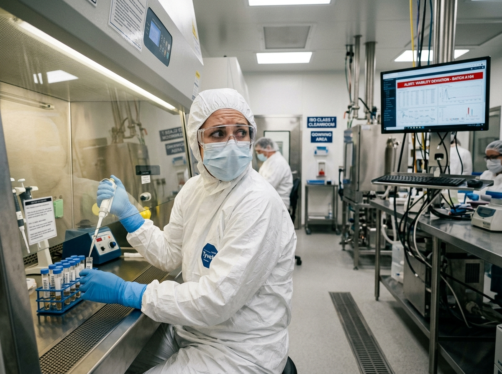
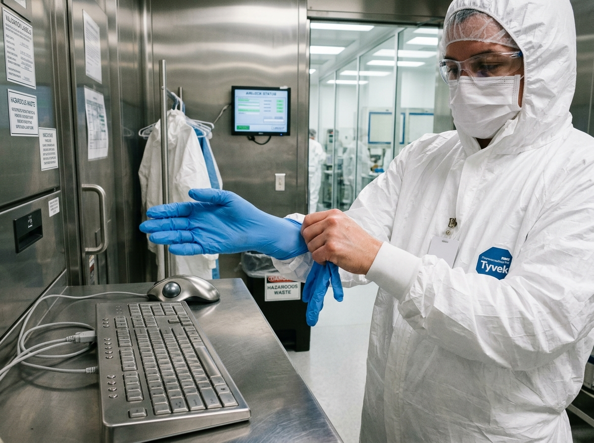

Audit-Proof Science Personally Integrated
Personal and zero-latency audit platform with instantaneous, hands-free compliance via the use of the latest in AR glasses.
SOP-BIO-449: Monoclonal Antibody Purification
Stalled by Yesterday's Tools
Despite operating at the bleeding edge of science, laboratory workflows remain bound by outdated documentation methods.
The Outdated Paradigm
High-containment environments producing life-saving therapies still rely on paper clipboards and physical logbooks. Researchers are forced to upload critical values hours after the fact under mental fatigue, introducing additional risks and audit discrepancies
The Missing Personal Link
While operating complex equipment and handling delicate reagent lots, scientists remain completely isolated from digital SOPs. Key insights, procedure steps and further information are hidden away and inaccesible where they need it the most, during regular every-day field tasks.
Severe Lost Productivity
Operators waste a considerable amount of time interacting with technological interfaces while complying with sterility procedures. In some cases, users must step away, remove gloves, log in, sanitize, and reglove. This repetitive bottleneck stalls research velocity and overall productivity.
ALCOA+ Violations
Post-hoc retrospective entries violate US FDA guidelines, as well as ALCOA+ standards. Events must be recorded and saved while they are taking place, not afterwards where illegible handwriting or unverified manual notes leave manufacturers vulnerable without evidence


Transforming Action into Immutable Records
LabCoat connects everyday interactions to digital compliance in real time, providing a cloud based audit-proof platform that synchronizes across AR devices, regulatory ledgers, and other systems.
Four Pillars of Personal Laboratory Intelligence
Regulatory Integrity & E-Signatures
Built for FDA 21 CFR Part 11 and GAMP 5. Features dual-factor e-signatures, SHA-256 edge hashing, and audited revision request workflows with supervisor review.
Hands-Free AR & Edge Vision
Standalone smart glasses project SOP guidance in peripheral view. A 5-second circular dashcam buffer captures objective proof only when procedural milestones occur.
Interconnected Network & Global Record
Single source of truth across facilities. Live 2D/3D spatial floorplan, batch genealogy trees linking lots to finished vials, and automated calibration lockouts.
Third-Party Integrations
Eliminate manual data bridges. Bi-directional sync with existing LIMS, ELN, and ERP platforms automates stock deductions and compiles locked batch PDFs with one click.
Proven ROI for Regulated Operations
Explore how shifting from passive binders to intelligent personal execution transforms laboratory efficiency and audit readiness.
Increase in Active Bench Throughput
By eliminating the constant degloving penalty and keyboard transcription inside laminar hoods, operators execute protocols smoothly without stepping away from biosafety cabinets.
“Before LabCoat, our cleanroom operators spent a third of their shifts degloving to type into stationary computers. LabCoat gave our team their hands back, eliminated paper logbooks, and made our batch records 100% audit-proof on day one.”
Engineered for FDA 21 CFR Part 11 & ALCOA+
LabCoat guarantees compliance by design. We turn data integrity from an administrative vulnerability into mathematical certainty.
Operator Binding
Every action uniquely tied to verified operator badge and device serial number.
Standardized Digital
Eliminates illegible handwriting, crossed-out notes, and ambiguous binder entries.
Sub-Millisecond Edge
Logged at the exact millisecond of physical action via embedded PGlite WASM storage.
Point-of-Origin Capture
Primary record captured directly at the biosafety hood without secondary transcription.
Cryptographic Proof
Every payload hashed with SHA-256 to prove zero offline client-side tampering.
Full Audit Footprint
Includes operator telemetry, IMU head orientation, and 5s video verification buffers.
NTP Epoch Time-Lock
Unified chronological sequencing across edge wearables and enterprise LIMS instances.
Offline-First Durability
Zero data loss during network blackouts; commits to local flash and syncs when online.
Operator Binding
Every action uniquely tied to verified operator badge and device serial number.
Standardized Digital
Eliminates illegible handwriting, crossed-out notes, and ambiguous binder entries.
Sub-Millisecond Edge
Logged at the exact millisecond of physical action via embedded PGlite WASM storage.
Point-of-Origin Capture
Primary record captured directly at the biosafety hood without secondary transcription.
Cryptographic Proof
Every payload hashed with SHA-256 to prove zero offline client-side tampering.
Full Audit Footprint
Includes operator telemetry, IMU head orientation, and 5s video verification buffers.
NTP Epoch Time-Lock
Unified chronological sequencing across edge wearables and enterprise LIMS instances.
Offline-First Durability
Zero data loss during network blackouts; commits to local flash and syncs when online.
Full support for computer-generated audit trails, dual-signoff revision requests, and locked PDF batch releases.
Eliminate Paper Binders and Empower Your Scientists.
Schedule a 20-minute tailored demonstration with our laboratory execution engineers to see the live AR simulator and enterprise dashboard.
Schedule an Audit Demo
We'll prepare an interactive run tailored to your facility type.